Lec05 | Image Matching and Motion Estimation#
Image matching#
Finding point-to-point correspondences between two images

Main Components of Feature matching
- Detection: identify the interest points
- Description: extract vector feature descriptor surrounding each interest point
- Matching: determine correspondence between descriptors in two views
Detection#
Feature points#
特征点需要满足独特性（至少要在局部唯一）
那么我们首先的问题就是如何衡量一个点的独特性.
考虑一个小的像素窗口,如下图所示，当我们向任意一个方向移动该窗口，都会造成较大变化时，我们认为该点是uniqueness
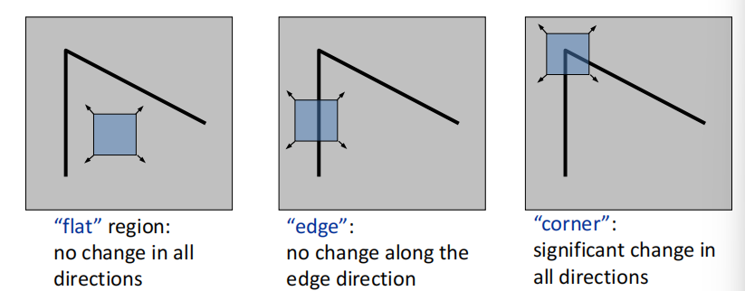
在数学上，我们可以用梯度分布来衡量该变化

根据上图我们可以大致观察到图像的特征，即存在多少个edge及其变化的方向（即梯度方向），更进一步，我们使用主成分分析（PCA）的方法进行计算
- The 1st principal component is the direction with highest variance
- The 2nd principal component is the direction with highest variance which is orthogonal to the previous components.
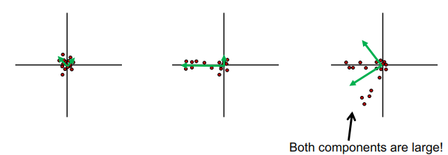
图中绿色箭头所指的方向即协方差矩阵两个特征向量的方向，长度即特征值的大小。可以看到，我们想要的是两个主成分大小都很大的区域。具体计算过程如下：
- Compute the covariance matrix at each point
- Compute eigenvalues
- Classify points using eigenvalues of \(H\):
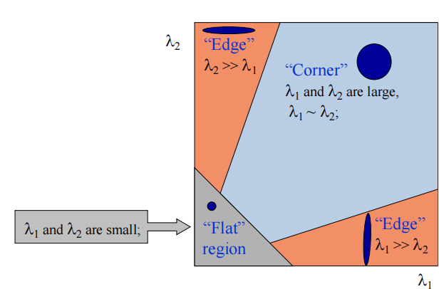
为了更方便计算，我们引入哈里斯算子(Harris operator): $$ f=\frac{\lambda_1\lambda_2}{\lambda_1+\lambda_2}=\frac{determinant(H)}{tr(H)} $$ 注意到只有满足\(\lambda_1,\lambda_2\)都很大时函数值才不为零，\(f\) 被称作corner response.
Summary: Harris detector#
- Compute derivatives at each pixel
- Computer matrix \(H\) in a Gaussian window around each pixel
- Compute corner response \(f\)
- Threshold \(f\)（阈值过滤）
- Find local maxima of response function
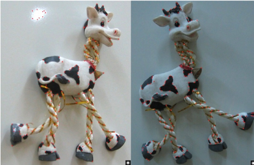
除了独特性之外，我们还希望特征点在图像变换（下图是常见的变换，包括光学变换和几何变换）中保持不变。比如说对于上图，我们希望左右两张图片检测到的特征点相同。
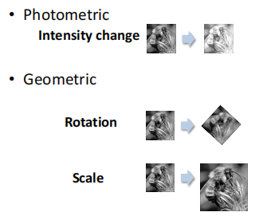
Harris detector: Invariance properties
首先对于光学变换，对于常数项 \(b\), 我们在求导时会将其消掉，但是intensity scaling \(a\) 无法消掉，所以Harris detector is partially invariant to affine intensity change.
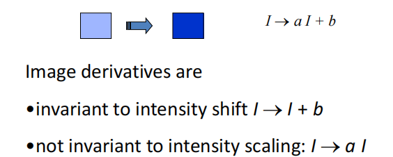
比较显然的是几何变换中的平移与旋转变换，由于几何结构保持不变，我们计算的协方差矩阵也不会变化，因此Corner response is invariant w.r.t image translation and rotation.
但是对于图像放缩来说，角点响应函数的值是会变的，下图是一个直观的例子，在左侧图的区域识别为角点，但是在右侧图识别为边缘

这就是我们需要解决的问题：如何在经过一定变换后的图像中找到合适的scale（或者窗口大小）呢？
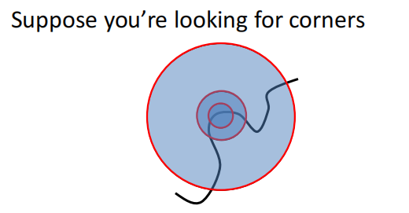
注意到我们的目标是特征点匹配，那么理想的结果就是两张图相同的feature point对应的corner response应该相同。
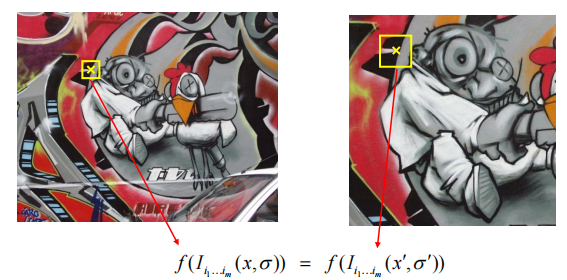
所以我们考虑不同大小的window size, 取得对应的corner response值，将其绘制成图像，曲线的峰值（即特征最明显的区域）即为当前图片应该取的scale。

但是在实际应用中，instead of 改变window size，我们一般固定住窗口大小，而去改变图像的大小，形成一个图像金字塔(image pyramid), 二者效果上是等价的。

Blob detector#
Blobs are good fearues, but how to find them?
由于斑点的局部性质(即在一个小区域内，且一般是闭合的)，所以斑点区域在像素上具有比较大的二阶导。所以我们的步骤是计算图像的拉普拉斯，然后找到局部最大与最小值。
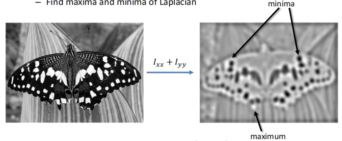
而对于计算经拉普拉斯变换后得到的图像，我们使用滤波器来实现。
- Laplacian operator:
- Compute image derivatives by filtering:
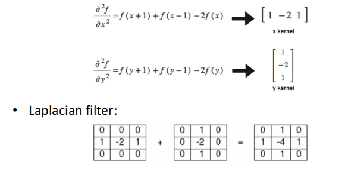
Laplacian of Gaussian Filter
由于Laplacian对噪声比较敏感(实际上求导这种运算对噪声都很敏感，它计算的是区域像素的变化率，更何况二阶导)， 所以我们通常使用Laplacian of Gaussian(LoG) filter 进行处理，即首先对图片作高斯模糊，再计算拉普拉斯算子：

需要注意的是，The scale of LoG 是由高斯分布的方差\(\sigma\)控制的，可以想象一下当 \(\sigma\) 比较大时，高斯核整体分布就比较宽，对应的scale也变大，反之亦然。
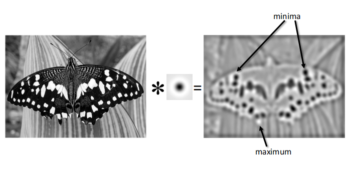
而在这里我们可以产生对滤波器更直观的认识。原图像与滤波器进行卷积之后，得到结果中比较清晰的是和卷积核长得比较像的像素区域，而差别比较大的则被模糊处理。LoG的visualization与斑点极其相似，因此它可以用来进行blob detection.

对于scale的选择，我们可以采用类似Harris detector的方法，只不过这里我们放缩的是LoG的\(\sigma\)

Difference of Gaussian(DoG)
- Filter the image with two Gaussians
- Compute the difference of two filtered images
LoG可以由两个相邻\(\sigma\)的Guassian进行近似

之所以引入DoG, 是因为我们在使用LoG处理图像时也是要进行Guassian滤波的，直接将滤波后的相邻两个图像相减效率会更高。

Summary of detection#
- What is a good feature point?
- unique
- invariant to transformations
- Popular detecors
- Harris corner detector
- Blob detector(LoG,DoG)
Description#
We know how to detect good points.
Next question: How to match them?
Answer: Extract a descriptor for each point, find similar descriptors between the two images(构建一个描述子)
Patches with similar content should have similar descriptors
首先很容易想到的就是将像素值拉长，作为一个特征向量。But this is very sensitive(i.e.,not invariant) to even small shifts, rotations.
SIFT(Scale Invariant Feature Transform)#
一个非常自然的想法
SIFT 使用patch的梯度分布(梯度向量的方向分布)作为描述子。该方向必然是位于\([0,2\pi]\)之间，因此SIFT构建一个直方图，来统计在每个区间（例如十等分）有多少个像素。\([0,2\pi]\)等分个数即为描述子的维度。
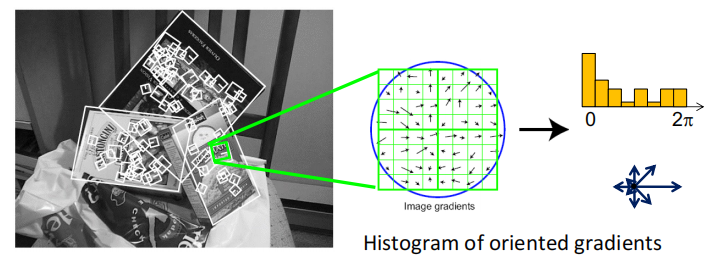
此时对于图像的平移显然不会有影响，但我们考虑旋转和scale。
旋转会改变梯度向量的方向，导致直方图循环平移。但这个情况很好处理：我们可以选中最大的分量放在第一个，使整个直方图平移对齐，称作直方图的归一化(朝向归一化)
对于scaling来说，SIFT的名字scaling invariant 可能会有些误导。但很显然地，SIFT本身描述子是not invariant to scaling的(缩放后区域内的向量个数都发生变化了呀)，但其实SIFT是经过DoG处理过的，即在检测阶段已经确定了scale的大小(最佳的\(\sigma\))，所以我们在提取描述子时就不用考虑scale的影响了。
Properties of SIFT
Extraodinarily robust matching technique
- Can handle changes in viewpoint
- Can handle significant changes in illumination
- Fast and efficient-can run in real time
Summary: SIFT algorithm
- Run DoG detector: find maxima in location/scale space
- Find dominate orientation
- For each (x,y,orientation), create descriptor
Matching#
现在我们找到了特征点，并且有了特征点的描述方法(描述子),现在我们要做的就是将对应的特征点匹配起来,简单的思路就是计算两个描述子向量之间的距离,并与最小的匹配.
但是当两张图有很相似的区域时，这种方法会造成有歧义的匹配，如下图所示
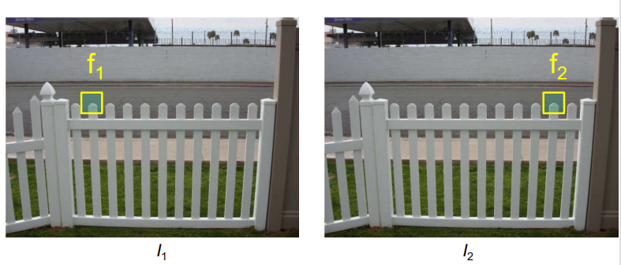
我们有两种解决方法:
Ratio test#
我们定义 ratio score: $$ \frac{\Vert f_1-f_2\Vert}{\Vert f_1-f_2^{'}\Vert} $$
其中\(f_2\)是\(f_1\)的bset match, \(f_2^{'}\)是second best match
容易得知,当匹配正确时,ratio score会比较小, 反之,ambigous matches have large ratioi scores.
Mutual nearest neighbour#
find mutual nearest neighbours 如果匹配正确的话,我们对\(f_2\)寻找最佳匹配，那么应该也是\(f_1\).
- \(f_1\) is the nearest neighbour of \(f_2\) in \(I_1\)
- \(f_2\) is the nearest neighbour of \(f_1\) in \(I_2\)
Deep learning for feature matching#
表现得比传统方法好很多
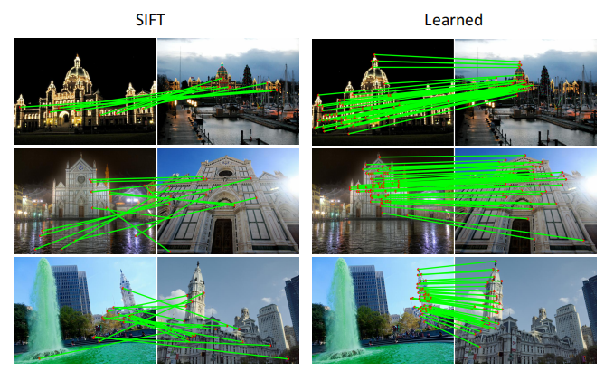
Motion Estimation#
The cause of motion - Static camera, moving scene - Moving cameera, static scene - Moving camera, moving scene - Static camera, moving scene, moving light
Motion estimation problems - Feature tracking - Extract featur points and track them over multiple frames.(即给出两帧画面，估计特征点的运动方向) - Output: displacement of sparse points - Optical flow - Recover image motion at each pixel - Output: dense displacement field
二者的主要区别在于feature tracking输出是离散的,仅限于某些特征点;而optical flow输出是连续的,估计的是整张图片
但二者使用的方法都是一样的： Lucas-Kanade method
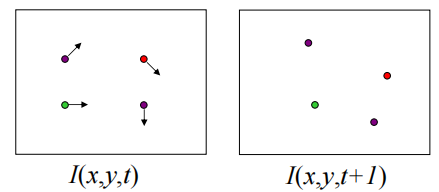
LK算法的三个主要假设:
- small motion: points do not move very far
- brightness constancy: same point looks the same in every frame
- spatial coherence: points move like their neighbours
基于上述三个假设，我们可以得到以下的方程：
- Brightness Constancy Equation:
- Taylor expansion assuming small motion:
所以得到 $$ \nabla I\cdot \begin{bmatrix}u&v\end{bmatrix}^T+I_t=0 $$
我们有两个未知数，但是只有一个方程，这时候需要用到另一个假设： spatial coherence constraint: - 在当前像素邻域的像素运动方向相同 - 所以如果我们使用\(5\times 5\)的窗口，那么可以得到25个方程!
这时候我们就可以使用最小二乘法求解 \(\mathop{min}_d \Vert Ad-b\Vert^2\),得到\((A^TA)d=A^Tb\),即 $$ \begin{bmatrix}\sum I_xI_x&\sum I_xI_y\ \sum I_xI_y&\sum I_yI_y \end{bmatrix}\begin{bmatrix}u\ v\end{bmatrix}=-\begin{bmatrix}\sum I_xI_t\ \sum I_yI_t\end{bmatrix} $$
当\(A^TA\)可逆且两个特征值不能太小的时候,该方程有解,这个条件和之前介绍的Harris corner detector 的条件是一样的!
不能预测运动的情况
-
Low Texture Region: gradients have small magnitude
-
Edge: Large \(\lambda_1\), small \(\lambda_2\),只能估计一个方向的运动。(analogy:aperture problem)
但是如果实际情况不符合上述三个假设时,LK算法就会出现问题
对于不满足small motion的情况(比如说特征点实际上移动了八个像素)，我们有方法可以解决
一个直观的想法就是将图片缩小到原来的八分之一,在缩小后的图片中处理之后再放大回去.但是该方法的缺点就是在缩小图片的过程中会丢失信息，这样图像移动距离的精度就无法保证。
一个想法就是使用像素金字塔。其中金字塔一是时间为\(t\)时的图像,金字塔二是时间为\(t+1\)时的图像。在金字塔上逐层估计,并逐步细化。例如先估计运动距离小于一个像素的最上层图像，根据此估计在金字塔一中的第二层恢复出运动，再与金字塔二进行比较，此时特征点移动的距离经过较为准确的估计后也小于一个像素，以此类推。
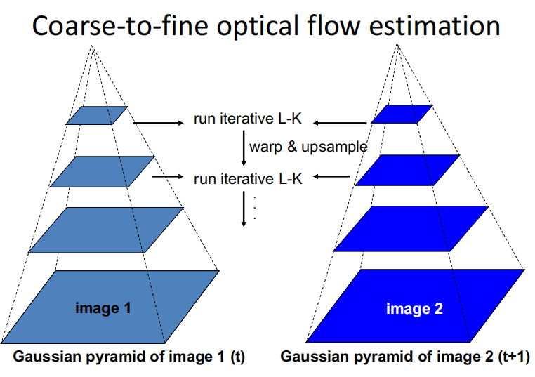
Applications
-
Video stablization
-
Video denoising
Created: 2024年8月11日 11:55:40